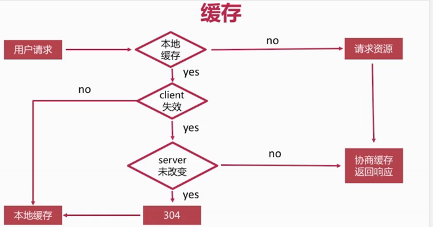

协商缓存实现原理
第一次请求某个静态资源，服务器响应头给到浏览器一个last-modified
第二次再次请求这个资源时，浏览器会带一个响应头（If-Modified-Since）给服务器
第二次服务器端这边，收到这个（If-Modified-Since）请求头后，会与文件的修改时间做比较，来决定给浏览器返回200还是304
注意事项：
在使用缓存的时候，需要把浏览器的设置：disabled cache 前面的勾去掉